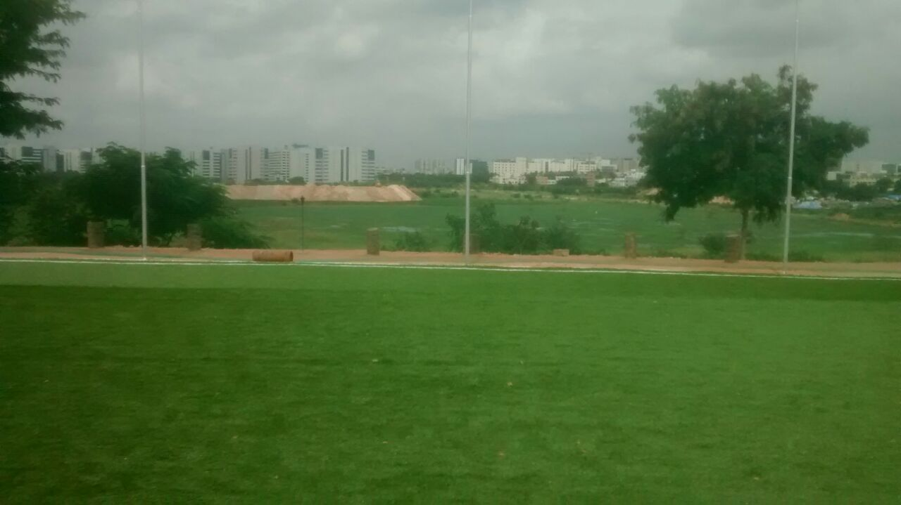

Hawk Sports Arena

- Just grazing the Bellandur Lake, where you can see sights of the Lake while engaging yourself in a game of 5 a-side Foootball
- Play Mania has 2 Football Turfs laid out at the venue.
- It is open from 6 am in the morning to 12 am midnight and also houses facilities for Badminton and Table Tennis.
- Bengaluru has got fine-quality football turfs in every corner of the city
 ASTROBOOK
ASTROBOOK